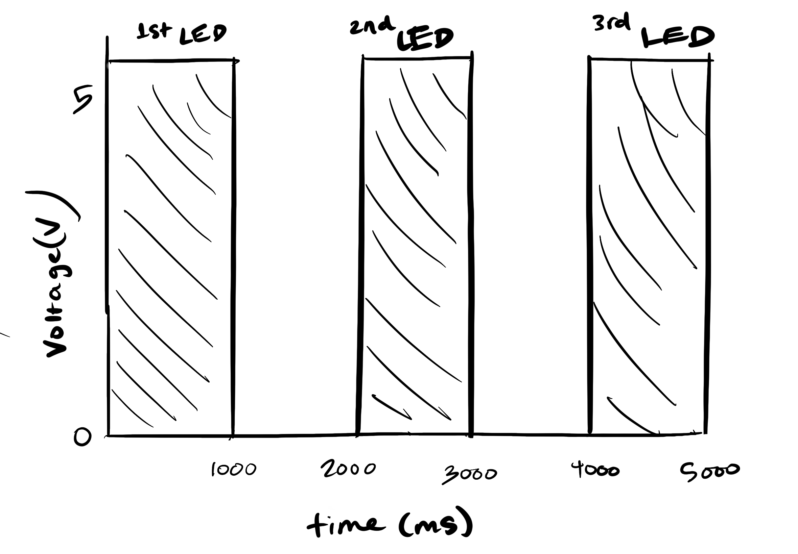

Blink Circuit!
Take a look at my Blink circuit!

Code Snippet
// the setup function runs once when you press reset or power the board
void setup() {
// initialize digital pin LED_BUILTIN as an output.
pinMode(13, OUTPUT); //one of the pins to start circuit
pinMode(12, OUTPUT); //second of the pins to start circuit
pinMode(11, OUTPUT); //third of the pins to start circuit
}
// the loop function runs over and over again forever
void loop() {
digitalWrite(13, HIGH); // turn the LED on (HIGH is the voltage level)
delay(1000); // wait for a second
digitalWrite(13, LOW); // turn the LED off by making the voltage LOW
delay(1000); // wait for a second
digitalWrite(12, HIGH); // turn the LED on (HIGH is the voltage level)
delay(1000); // wait for a second
digitalWrite(12, LOW); // turn the LED off by making the voltage LOW
delay(1000); // wait for a second
digitalWrite(11, HIGH); // turn the LED on (HIGH is the voltage level)
delay(1000); // wait for a second
digitalWrite(11, LOW); // turn the LED off by making the voltage LOW
delay(1000); // wait for a second
}
Schematics and Calculations
As can be seen in the above image, all schematics for the different loops follow the same pattern. The calculations show that a current of 160 ohms or more is necessary for a resistor, and the closest one we have is 220 ohms, so that is what we use throughout the circuit.
Additional Questions
1. The above graph shows the connection between time and voltage of the three LEDs. The three LEDs respectively jump up one by one as their voltage goes up causing the LED to light up.
2. Since the Arduino has 14 pins, you are limited by the number of allotted pins, so you could make 14 LEDs blink independently. But if you want to be safe, it would be 10 LEDs, by dividing 200mA for the whole Arduino by 20mA for each separate LED.
3. I was able to blink my LEDs and see them go until 4 milliseconds, which means that after 3 milliseconds the changes are so fast they are imperceptible to the eye.